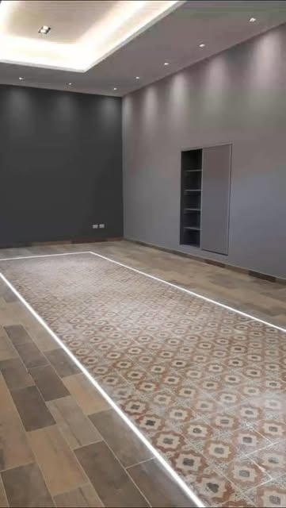

01 / La base del proyecto
Construcción y albañilería
Trabajos de construcción y albañilería para avanzar desde la base de tu proyecto. Cada etapa se conversa según las características y necesidades de la obra.
- Albañilería y mampostería
- Ejecución de trabajos de obra
- Revisión del alcance de cada etapa